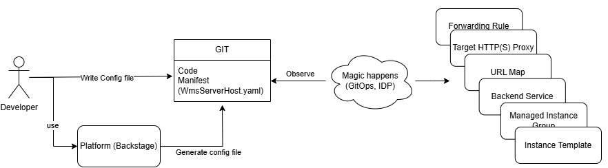

Our Product Vision
We envision an environment where software development cycles are fast, reliable, and scalable,
supported by a culture of experimentation, continuous improvement, and a streamlined developer experience.
To achieve this, we intend to build an internal development platform (IDP) that serves as a centralized,
self-service interface for developers, enabling them to focus on delivering value without the burden of
operational complexity. This platform will unify tools, processes, and best practices, creating a streamlined
and highly efficient development workflow.
An IDP will improve operations by:
-
Accelerating Development Cycles
By providing on-demand environments, reusable templates, and pre-configured resources, the platform will
eliminate repetitive tasks, reduce setup time, and enable rapid iteration from idea to deployment.
-
Promoting Automation and Reproducibility
The IDP will emphasize automation, reducing the risk of human error and increasing consistency. Automated
CI/CD pipelines, infrastructure-as-code templates, and self-healing mechanisms will ensure scalability and
reliability.
-
Driving Innovation through Experimentation
By enabling easy provisioning of isolated environments, the platform will allow developers to test ideas safely
and quickly.
-
Supporting Continuous Improvement
Usage insights and feedback will drive the platform's evolution to meet developers' and organizational needs.
Metrics and KPIs will help identify bottlenecks and areas for refinement.
-
Ensuring scalability
Through a scalable platform that can grow with the organization, enabling rapid deployment of new teams and ensuring
that all teams have access to the same tools and services.
By aligning with the right principles and focusing on the developer experience, this platform will become the foundation
of technological excellence for our organization. It will not only increase operational efficiency and reliability but also
cultivate a culture of experimentation, innovation, and satisfaction—enthusing both customers and employees.
Why Should You Use Our IDP As Developer?
Our Internal Developer Platform (IDP) makes software development faster, more efficient, and hassle-free.
Instead of dealing with infrastructure, permissions, or manual workflows, you can focus on what truly matters:
writing code and delivering value.
Key Benefits at a Glance:
- ✅ Fast Provisioning – Launch new projects and deploy services in minutes instead of hours or days.
- ✅ Reduced Operational Overhead – No manual infrastructure setup, no unnecessary waiting times.
- ✅ Standardized Best Practices – Unified processes ensure stability, security, and efficiency.
- ✅ Transparency & Traceability – Always have full visibility into your services and their status.
- ✅ Self-Service & Autonomy – Develop independently without relying on other teams or waiting for approvals.
- ✅ Scalability & Future-Proofing – The platform grows with your needs without additional management overhead.
Example
Imagine you can create a WMS server on the Google Cloud Platform with a few clicks on our frontend, or a few lines of code, like in this imaginary example:
apiVersion: wms.log.psi.de/v1alpha1
kind: WmsServerHost
metadata:
name: wms-server-host-test
spec:
size: small
enableSsh: true
This is a YAML configuration file. Specifically, it appears to be a custom resource definition (CRD) for a Kubernetes-like system, used to define a "WmsServerHost" instance. Below, we break it down step by step.
apiVersion: Specifies the version of the API handling this resource.
kind: Declares that this resource is a WmsServerHost, which is likely a virtual machine.
metadata: Provides a unique name for this resource
spec: Contains configuration details
size: small → The server is a small instance, likely with limited CPU and memory.
enableSsh: true → SSH access is enabled, allowing remote login.
This setup provisions a VM in Google Cloud along with an internal load balancer. The seamless operation of the actual VM is implemented centrally, so you don't have to care about all the underlying components, like Instance Templates, Managed Instance Groups, Backend Services, URL Maps, Target HTTP(S) Proxies, Forwarding Rules, and more.
How It Works

Diagram: Developer workflow with GitOps and IDP.
Developers have two ways to create the configuration file:
- Manual Creation – Writing the file themselves.
- Automated Generation – Using our frontend to create it effortlessly.
Regardless of the method, the configuration file is stored in the
same Git repository where developers manage their code — not a separate system.
Git tracks changes to the file just like any other project asset.
Once the file is in place, our system continuously monitors the repository. Any updates trigger
an automated process that provisions, updates, or removes infrastructure as needed—
without manual intervention.
(More details on the file’s exact location will be covered shortly.)
Our IDP is your key to a seamless, efficient, and modern software development experience. Try it out and see how much smoother your workflow can be! 🚀